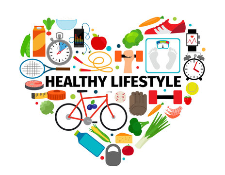

Tips for a Healthy Lifestyle
Posted on May 10, 2024
Maintaining a healthy lifestyle can be challenging in today's fast-paced world. In this blog post, I discuss some practical tips and strategies to stay healthy, including exercise routines, diet plans, and mental health practices.
One of the key aspects of a healthy lifestyle is regular physical activity. Whether it's a daily walk, a gym session, or a home workout, staying active is crucial for both physical and mental well-being.
Join me in this journey to a healthier you!